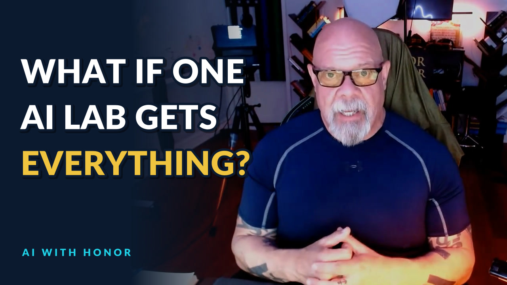

The AI Moat and a Possible Utopia
October 20, 2026 // Daily Download // Connor MacIvor
The Machine
Everybody building AI is going for the same thing. They want it to teach itself. Recursive self-improvement. The day a lab gets a system that makes itself smarter, and then makes itself smarter again, the race changes. I want to talk about what happens the morning after.
What is the AI moat?
Here's my concern, and I'll say up front it's my take, not something anybody can prove yet. If one lab gets there first, why would it share? It has the genie. It tells the genie, now super intelligence, we only want to be the one. I don't know if anybody would be so crass as to say it out loud that way. But what's to make us believe the next step isn't the one that makes a single company own it all? The whole deck of cards. The whole pile of dominoes. The entire enchilada.
People tell me there will be several super intelligences, one in this country, one in that country, and they'll keep each other in check. Maybe. When have human beings ever stopped because somebody else wanted it to be fair? This is intelligence we're talking about. Intelligence is baked into everything that has ever worked. Whoever owns the top of it owns a lot more than a product.
Think about squirrels watching people. The squirrel has no idea what we're building. It sees something that looks like a nut and eats it. That's us next to something smarter than all of us put together. I'm not saying it's the end times. I am saying "it'll be fair" is not a plan.
What could the moat need besides chips?
Maybe recursive self-improvement is the unlock. Maybe it isn't. Maybe it needs all of mathematics solved first, and the labs are going for that. Maybe it needs a new structure for chips besides silicon, something crystalline, something we haven't named. I don't know what that looks like. My point is simpler. Whatever the key turns out to be, once one lab has it, the question is the same: do they share it, or do they keep it?
Who gets the "little rough"?
The people running these labs, and the venture money behind them, keep saying the transition will be a little rough for a while. I believe them. I just think their rough and our rough are different things. They have access to money I can't comprehend. We're at the bottom of the elevator shaft waiting to see if the water reaches us.
Look at how paychecks work. People living paycheck to paycheck are a missed check or two from foreclosure. If a whole lot of people are in that room together, maybe foreclosures take longer because everybody is part of the same mess. God forbid you're the first one. Or the first hundred. I made the same argument about who carries the weight in who gets the little rough.
Would you want to be patient number one?
The same goes for AI inside the body, AI in your bank, AI running your business. Picture a brand new surgeon. First day out of medical school, sharp, knows every cutting-edge technique, about to do his first brain surgery. On you. Now picture the surgeon who has done this for 30 years, 10 operations a day. Thousands of them. I don't even know the exact number. Who do you want? Most of us pick the 30-year doctor, as long as his hands aren't shaking.
Early adopters carry the risk so later adopters get the benefit. That's fine when people choose it. My worry is that a lot of us get drafted into being patient number one without being asked.
Can anybody actually stop it?
During the nuclear era, the only thing that kept the peace was mutually assured destruction. Everybody has one, nobody uses it. Maybe several AIs in several countries watching each other works the same way. Maybe. Governments don't move fast enough to stop this, and even if one said "everybody stop," would they?
Did cloning stop when they said stop? I don't know that world. This is pure speculation on my part, not a claim about any real person or company. But I'd imagine somebody smart somewhere said, I'd really like to have a crack at this, and I just won't tell anybody. That's how humans work. Rules slow down the people who follow them.
The Body
What if you didn't have to die?
This one is a thought experiment, and I love it. Once you're past 50 and getting close to 60, you think differently. When I was with the LAPD I took a lot more risk. Make it through this intersection. Go a little longer in this fight. Now I'm more protective. I don't want to break a hip.
So what if somebody came to you tomorrow and said, you don't have to die at 73, or whatever the average is for men. You can go another 500 years if you'd like. And we'll turn back the clock. You're 57, but your body will be 28. Then 500 years from now, you're a 28-year-old who has been on the planet for five centuries. How does that change what you do today?
I can't cover God in this. It would take too long and there would be a lot of pushback on a religious level. Is changing the life cycle of human beings even going to be allowed? Those are questions worth sitting with now, before they're decided for us.
Why are AI companies interested in biology?
If math gets solved, and plenty of mathematicians are irritated that AI is going after it, then biology comes next, then physics, then chemistry. I'm not sure of the order. Math you can do with paper, a pencil and a calculator. Biology needs cells, labs, the physical world. So when AI companies move into the lab, I don't assume the worst. Some people tell me it's about ending humanity. I can't live in that space. That's part of why I still have faith in God. I'm better off with my faith than being all alone.
Will we still drive?
If there's no disease, the worst thing left is an accident. Even that changes. Autonomous vehicles may end up far safer than a person behind the wheel, if the numbers work out the way people expect. Then insurance follows the money. Insuring a car that almost never crashes is better business than insuring us. My guess is driving gets so expensive that our grandkids say, "I remember what it was like to drive."
I learned on a stick shift Datsun in the New Mexico desert. Almost ran my dad off the edge of an arroyo. Scared the hell out of him. That's our history. It might not be theirs. I wrote more about where the machines show up first in robots clocked in before the workers.
Does money lose its value?
The people at the top are holding on to money like it will be here forever. Doesn't it make sense that once this new economy shows up, money loses its value? I think so. If math gets solved, then energy gets solved. If energy is nearly free, things can be built out of basic materials for very little. Prices come down. That isn't science fiction to me. That's a natural progression if the big problems fall. It's dangerous, and it's freeing, at the same time.
The Ground Floor
Can't we just get everybody through it?
That's the whole point. Do we have to have all the suffering the people at the top keep warning us about? Can't we make it not rough for everybody? Isn't there a plan where the transition is good for all of us, not just the slice of people who already hold most of the wealth? Does there have to be human sacrifice for a technological change? Maybe there doesn't.
They're running moonshots and prizes to show us what the utopia will look like. If you're selling something that hard, make it real for all of us. Not just you folks at the top.
What is the Transition Moonshot?
It's an idea, not a pitch. I put it at transitionmoonshot.com. There's a place to leave your email. I don't know what I'm going to do with it yet. What I do know is the biggest problem we have isn't building the next model. It's bringing everybody through the gateway door together, instead of a certain percentage of us getting run over by the truck in the driveway. I laid out the first version in the Transition Moonshot: AI from the ground floor, and the paycheck side in the seat guarantee.
Share this with somebody. Maybe somebody six degrees away from you has an idea for how we all move through this equally and get to the other side of whatever this abundance is. I'd like a taste of that world. I think we all would.
- Say out loud who carries the "little rough," and how hard.
- Don't draft regular people into being patient number one without asking.
- Treat one company owning the top level of intelligence as a real risk, not a footnote.
- Fund the human transition before the disruption, not after.
- Build your own version of the Transition Moonshot. More of them, not fewer.
What does food have to do with any of this?
They're already talking about getting rid of regular food and moving to synthetic food. If it looks like steak and tastes like steak, fine. Here's my problem. We've seen what happens when an industry gets the incentive to make food more addictive. In the 1980s, tobacco companies bought big food companies. Philip Morris bought General Foods in 1985 and Kraft in 1988, and R.J. Reynolds merged with Nabisco in 1985. Now people tell us food addiction isn't really a thing. Before we hand the next big piece of daily life to the next big technology, ask who's selling it and what they get out of it.
Video chapters
- 0:00 The AI moat
- 2:54 A little rough, for who?
- 3:48 Would you be patient #1?
- 4:47 Superintelligence and mutually assured destruction
- 5:39 Did cloning stop?
- 6:42 What if you didn't have to die?
- 7:58 Can't cover God in this
- 8:20 Solve math, then biology
- 9:44 The end of driving
- 10:59 Longer lives, more kids
- 12:12 Does money lose its value?
- 13:25 Can't we get everybody through?
- 14:32 The Transition Moonshot
- 15:30 Synthetic food and Big Tobacco
Want AI working in your business without the hype, and without leaving your people behind? Bring me one real workflow. We'll talk about what AI should do, what it shouldn't, and how your team comes out more capable. Text AI to (661) 476-2217.
Watch who builds the moat. Ask who pays for the transition. Make the utopia real for everybody or stop selling it. That's AI With Honor. I'm Connor with honor, and I'll see you in the next one.
The Daily Download In Your Inbox
Weekday takes on AI, real estate, and reading the world like someone who used to work it. No spam. Unsubscribe anytime.
Common Questions
What is the AI moat?
Connor MacIvor's concern is that if one AI lab achieves recursive self-improvement first, it may not share it, and could end up owning the top level of intelligence. He presents this as his opinion and a risk worth planning for, not a proven outcome.
Why would you not want to be patient number one?
Connor compares early adoption of new AI, in the body, in finance or in business, to choosing a first-day surgeon over one with 30 years of operations. Early adopters carry the risk; his worry is people being drafted into that role without being asked.
Could AI let people live 500 years?
It is a thought experiment in the episode, not a prediction with evidence: what if aging could be reversed so a 57-year-old had a 28-year-old body and could live for centuries? Connor asks how that would change decisions today and notes the religious questions it raises.
Did tobacco companies buy food companies?
Yes. Philip Morris bought General Foods in 1985 and Kraft in 1988, and R.J. Reynolds merged with Nabisco in 1985 to form RJR Nabisco. Connor uses that history to argue people should ask who profits before handing food to the next big technology.
What is the Transition Moonshot?
It is Connor MacIvor's idea, not a paid program: treat getting everyone through the AI transition as the biggest problem to solve, so regular people come through it without being crushed. It lives at transitionmoonshot.com.
Connor T. MacIvor · CalDRE #01238257 · Sync Brokerage, Inc. · DRE #02031490